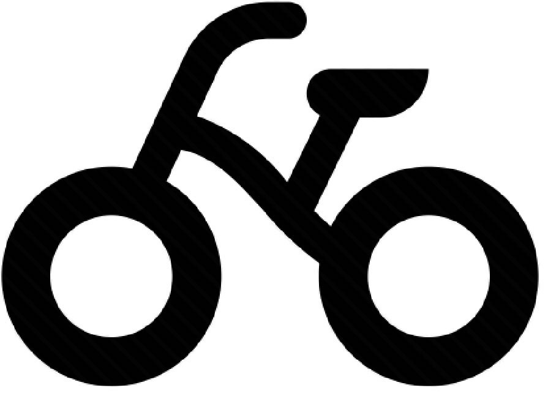
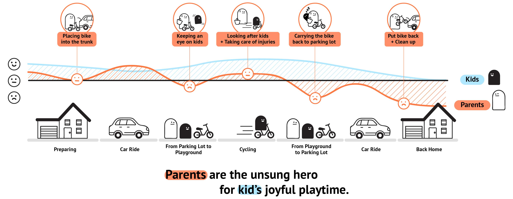
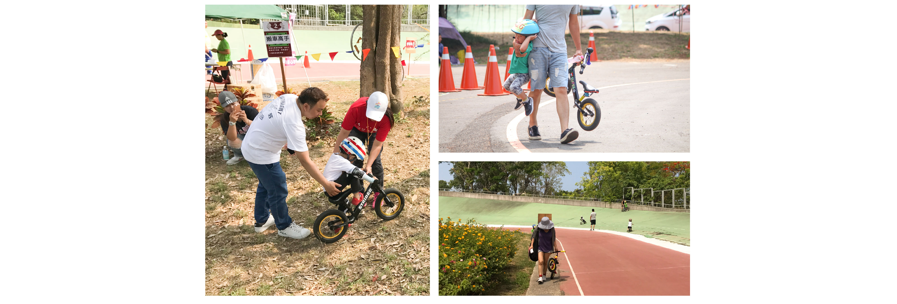
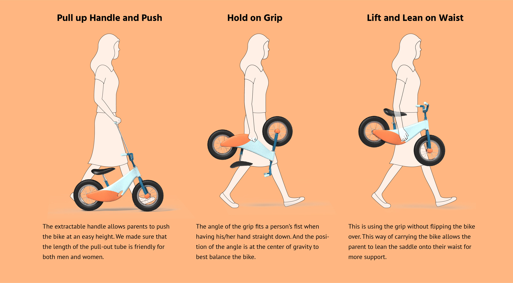
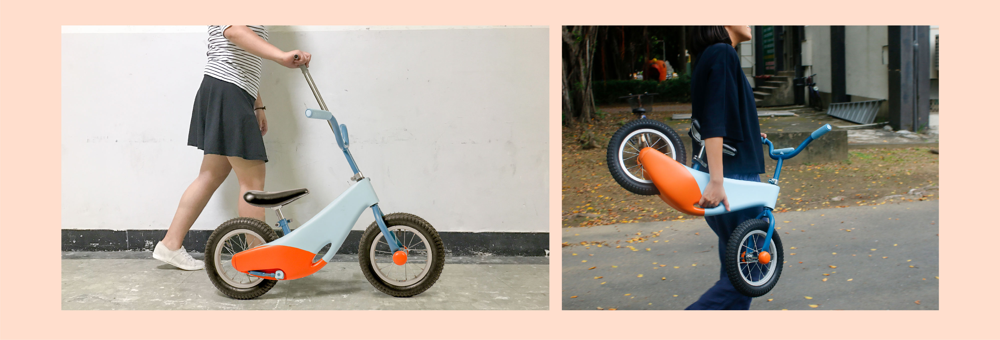
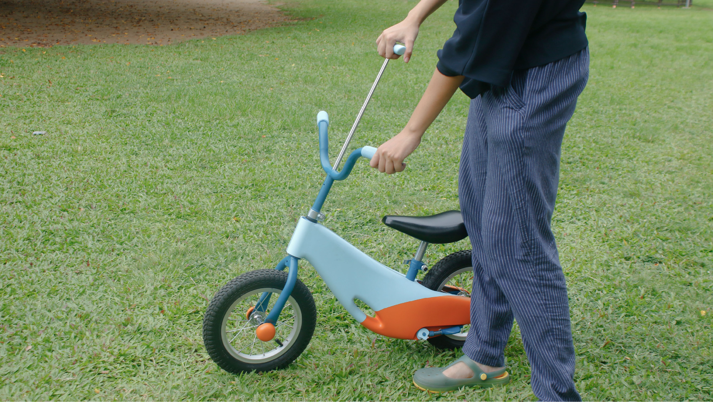

Sophia Tseng
Bama, 爸媽, papa mama, mom and dad. Bama bike provides new ways to carry a bike, also designed with lots of care on the safety aspect. We hope that it can be an enjoyable experience for both kids and their parents interacting with a balance bike.
A balance bike is a training bike that helps children learn balance and steering. It has no foot pedals and no gears; it only moves when the rider scoots. A balance bike must be small enough for the rider, usually kids age 1.5 to 6 years, to be able to put both feet flat on the ground. Essentially, it’s a mini dandy horse for kids.
At first, we focused a lot on the bike itself, but after our field research, we realized that from preparing for going out, carrying the bike, looking after kids’ safety, etc. Parents are the hidden user of a balance bike.
 Parents are often the ones who carry the bike around since the kids are so small and barely have muscle strength. However, in order to accomodate to the size and height of a regular balance bike, parents often have to walk at a weird position to hold onto the handle.
 We brought our bike to a park, and invited families to try out our design. Someone said that the pull-out handle doesn’t look stirdy. Kids loved it, and some parents asked if this would be on the market! To me, being able to gain feedback from actual users is very encouraging. I am glad we striced to make the model work!
Bama Bike won us a First Prize at the ID annual exhibition!
Claire Hsu & Sophia Tseng